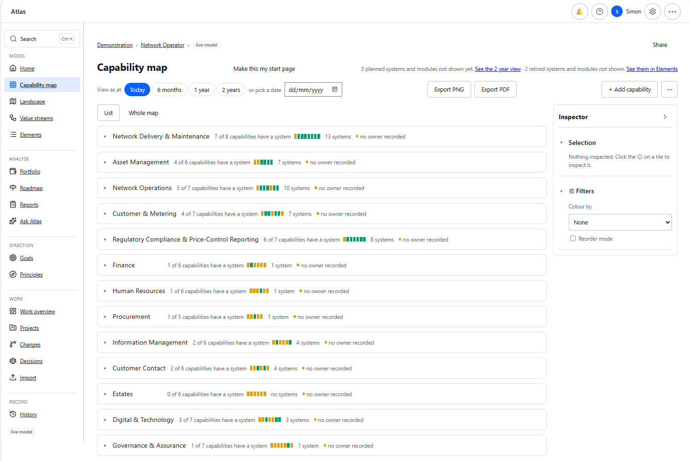
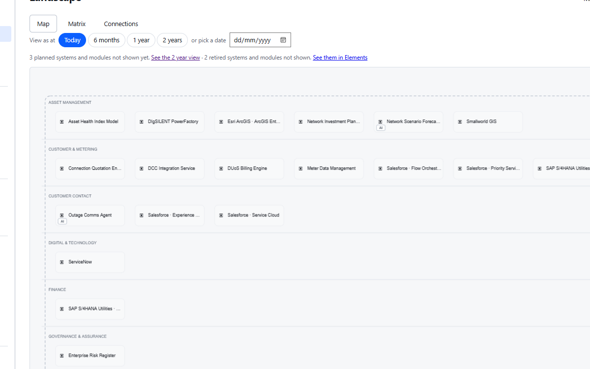
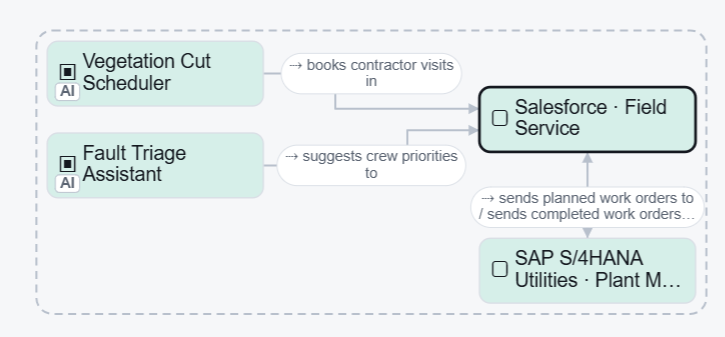
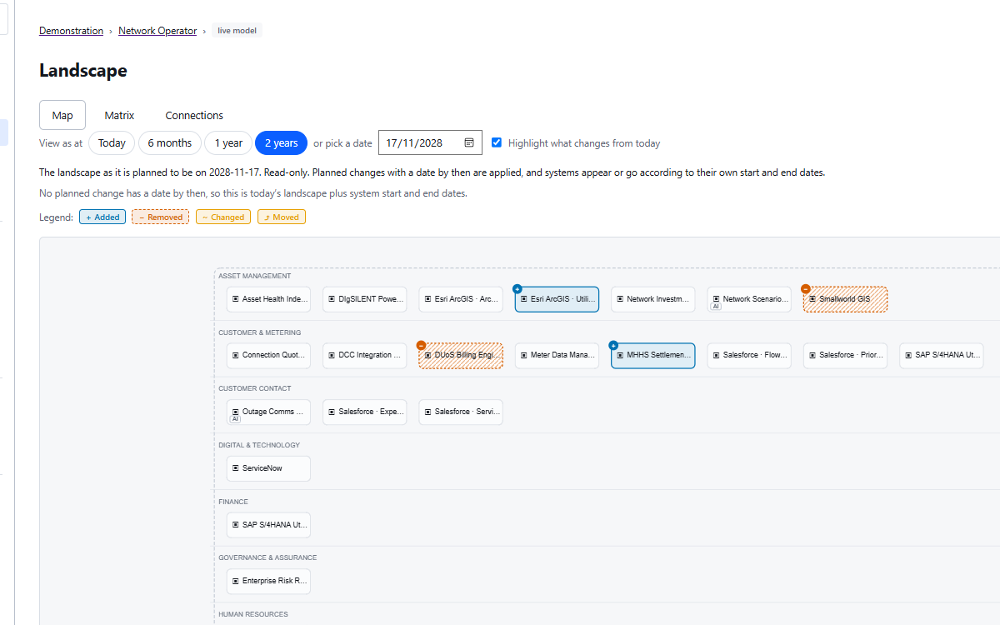
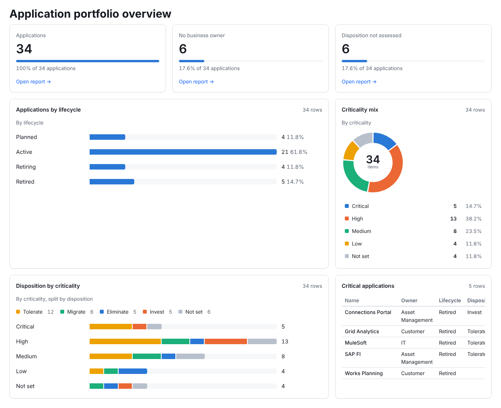
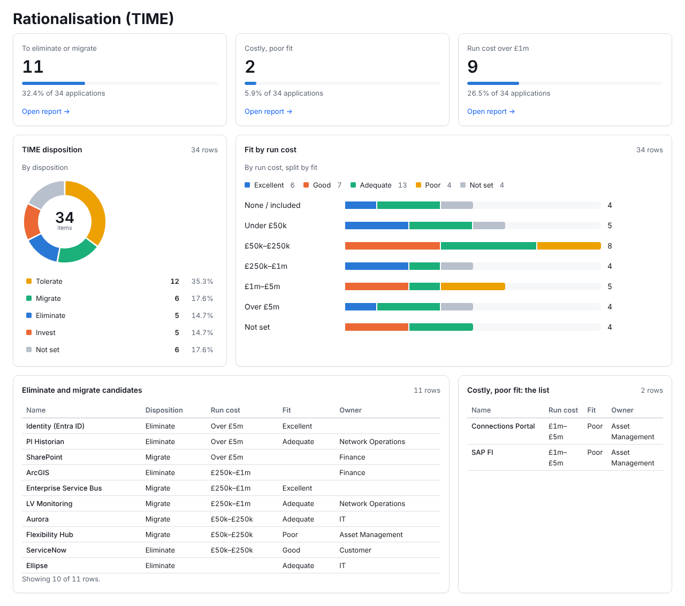

Atlas keeps what your organisation does, the systems behind it and how they connect in one model. Every picture is drawn from it, so they never disagree.
Live now at atlas.simmodlr.app · Free to use · Open source (AGPL-3.0)

Ready-made maps for a dozen sectors. No blank page.

Which systems support each capability, and where there are gaps.

Pick a system and see everything it talks to.

View the landscape in 6 months, 1 year or 2 years, and compare changes.
Pick your sector and adapt it.
Spreadsheet, document, notes or MuleSoft. You review every proposal first.
Nothing is hand-drawn, so fix a fact once and every view is right.
Drop in a spreadsheet, document or notes, or a MuleSoft export. Atlas matches what's already there and proposes changes. Nothing goes in until you accept it.
Compare As-is, To-be and the difference on the diagrams before anything is agreed.
A short list of only the problems, such as no owner or out-of-date facts, each linking straight to the item.
Linked to the thing they're about, so the reasons are never lost in a slide deck.
See which applications use AI and which act as agents, in one place.
Everyone sees the same picture. Viewer, Contributor, Architect and Owner roles keep it under control.
Portfolio and rationalisation reports update as the model does. These are from the electricity network sample.

Lifecycle, criticality and ownership at a glance.

Which applications to keep, migrate or retire, and what they cost.
Atlas concentrates on what the organisation does, the applications that support it and how they connect, so it is quick to learn and easy for people who aren't architects.
Two made-up sample models: an electricity network operator and a retailer. You get your own copy to explore and change freely. Tell us what you think at support@simmodlr.app.
Atlas is genuinely open source under the AGPL-3.0 licence. Read the code, run your own copy, and see exactly how your model is handled. There is no fee to use it and no lock-in, so your architecture stays yours.
Yes. Atlas is free to use, and the full source code is on GitHub under the AGPL-3.0 licence. You can read it, run it and change it. If you share a modified version, you share your changes too.
No. Atlas uses plain English, and the pictures are readable by anyone who needs to understand how the organisation fits together.
No. Starter capability maps are ready for electricity networks, NHS, housing, local government, higher education, retail, financial services, water, manufacturing, rail and more.
You can import spreadsheets, documents, notes and MuleSoft exports, and a live MuleSoft connector is available. You review every proposal before it joins the model.
Inspired by Simon Brown's work on the C4 model and Structurizr: diagrams should be views of one model, not separate drawings. Atlas has gone its own way, working across the whole organisation.
Use it today at no cost, read the source on GitHub, and tell us what to build next. Early days: your feedback shapes it.